What IS a "Super Scaler?"
This may be fairly obvious for you, but video games didn't always look as good as they do now! Many games these days use very complex 3D rendering tools and technologies that developers from the 80's and 90's could merely dream of using.
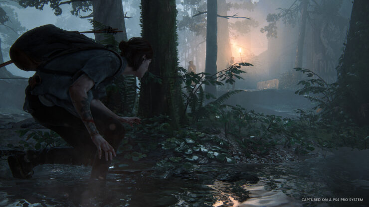Today, scenes in video games can be made up of millions of polygons at once. Back then however, CG rendering was still in its infancy. Often 3D games were made using vector wireframe graphics, in which only the lines between points were drawn. This was much easier to process than having filled in polygons, since polygon filling was a rather slow and costly task for technology of that era. Filled-in polygons also need to be sorted or culled in order to make sure that objects farther away don't overlap with objects closer to the screen (also a very costly task!). This made vectors excellent for early 3D video games, but weren't exactly very attractive to look at!
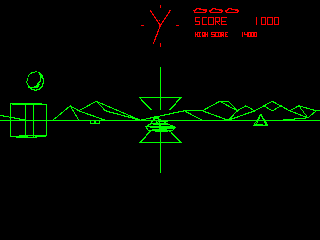Alongside vector graphics displays were raster graphics, which were designed to show images using a grid of pixels rather than a series of lines. Games using raster displays were built with two bitmap images. One such type of these images were known as sprites, which were bitmap graphics that could be displayed independently from the frame buffer. This meant that they could be easily moved around without the need for the entire screen to refresh, and made them perfect for moving objects such as players, enemies, and projectiles.

For a time (around the late 70's to the mid 80's) games using vector displays AND raster displays co-existed. The former had the advantage of being easy to scale and rotate, since vector graphics were literally made up of lines between points. Raster graphics had the advantage of being far more flexible and attractive than early vector displays, since they could render 2D images with full color.
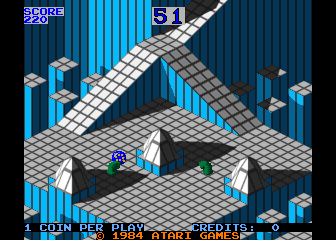
By 1985, the writing was on the wall for the prominence of vector displays in gaming. Their primitive nature compared against the more colorful and full images that could be produced by raster games of the time meant that they gradually faded away. But now what? This now meant that games with a convincing 3D effect would be harder to achieve, since full polygonal 3D wasn't quite in the cards yet! Could sprites somehow fill in the void left behind by the absence of 3D vector graphics?
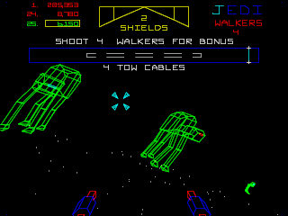Actually.... yeah! They kinda COULD!
Drawing a sprite at this point was quite easy for hardware to do. If the hardware supported the ability to draw the image at different sizes, you could create a failry convincing 3D effect just by drawing sprites at different scales! Sprites closer to the screen could be scaled larger while sprites farther away from the screen could be scaled smaller! Such was the case with Sega's Turbo from 1981, possibly the earliest example of a game that used sprites drawn at different sizes to replicate a 3D look. Namco's Pole Position followed suit a year later, using sprites and scanline effects to draw a convincing 3D environment made up of a road, other drivers, and several roadside objects such as signs and billboards.
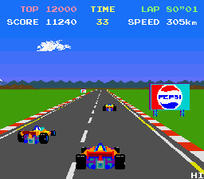These kinds of sprite based 3D games didn't really take off in popularity until around 1985, when Yu Suzuki produced both Space Harrier and Hang-On for Sega. While they used the same techniques as the aformentioned Turbo and Pole Position, the graphics hardware had advanced enough to visually blow both of them out of the water. Not only were they visually stunning to look at, but both games were also FAST due to the relative simplicity of only having to draw sprites at different sizes rather than objects made up of several polygons. Many other companies took notice to these new "scaler" type games and began producing their own.
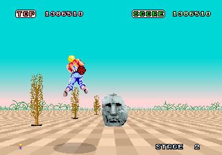And thus, a new age was born..... the SUPER SCALER age!!
So then, what IS a "Super Scaler?" The term refers to the computer graphics technique of using sprites and scanline effects to reproduce a 3D looking effect. Many games in the years following would use the effect due to the hardware and technology for it being far more readily available than for polygon-based 3D. Even with the advent of new polygonal 3D games such as Namco's Winning Run in 1988 and Atari's Hard Drivin' in 1989, Super Scalers still had their place thanks to their speed and visual fidelity. Super Scalers would continue to be used in games both in arcades and on home consoles for several more years...
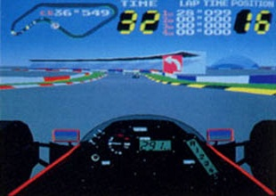 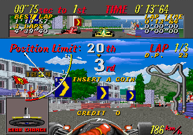...however, much like vector based games before it, Sprite Based 3D would eventually become outdated thanks to advancements in polygonal 3D technology. Games like Namco's Ridge Racer in 1993 and Sega's Daytona USA in 1994 both had full 3D with texture-mapped polygons running at a blazing fast 60 frames per second; on par with most Super Scalers at the time! And thus, 1995 would be the last hurrah for Super Scaler titles in the arcades, with polygonal 3D becoming far more accessible for developers and also being more expected from consumers who came to arcades for graphics they couldn't get on home consoles.
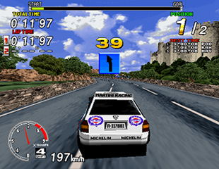 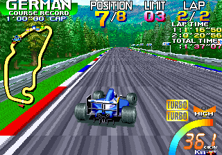Super Scalers weren't dead though! In fact, for lower fidelity hardware such as Nintendo's Game Boy line of handhelds or early Java-based phones. Even today, modern developers are still creating throwbacks to these old types of games. Why? Perhaps it's the way that Super Scalers had to "exaggerate" 3D space in order to look more appealing, and seeing how a 3D world can be made up out of 2D images used in creative ways still manages to impress to this day!
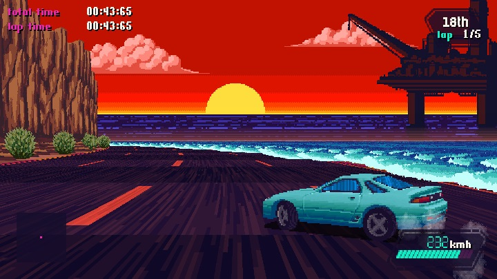Super Scalers may not by mainstream anymore, but they will never die out completely. Long live "SUPER SCALERS!!"
End of the road, bucko! Why don't you choose another article to read~?